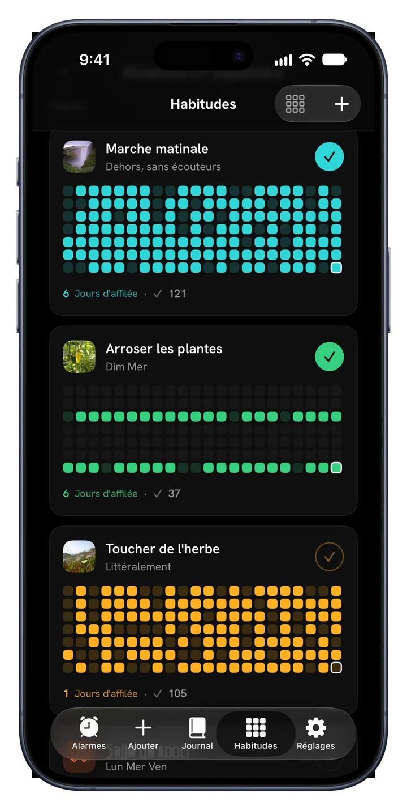
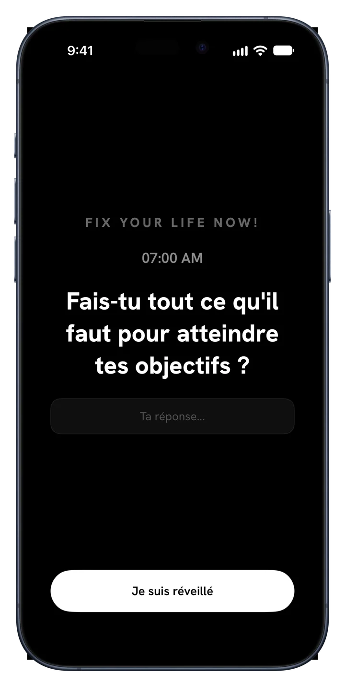
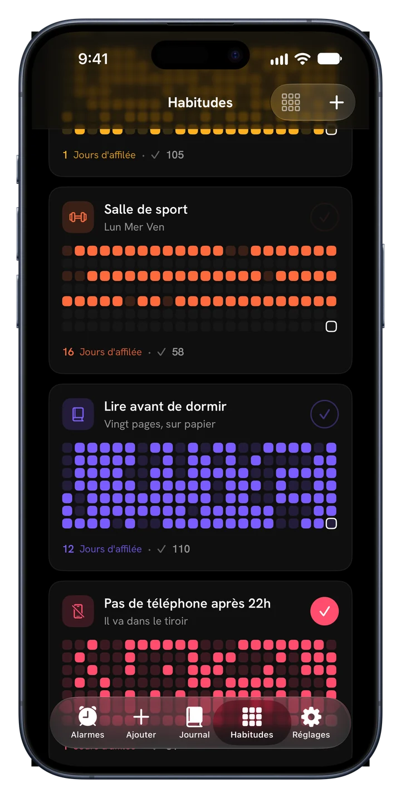
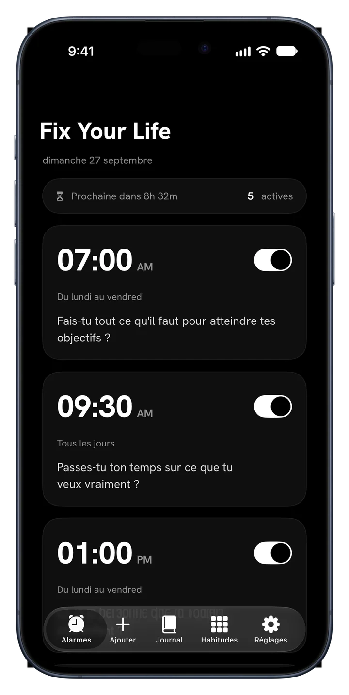
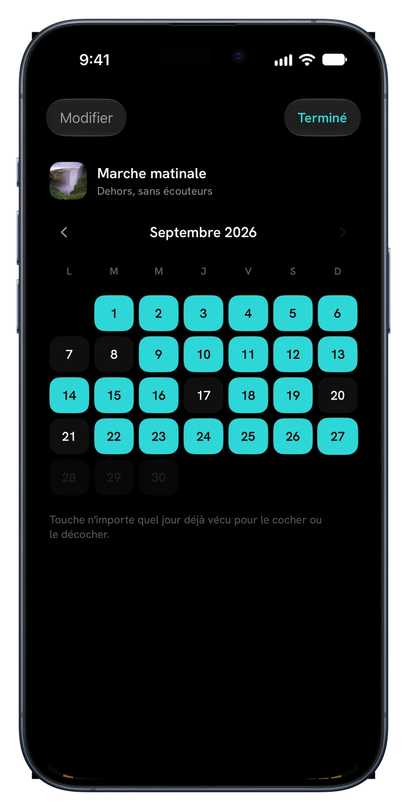
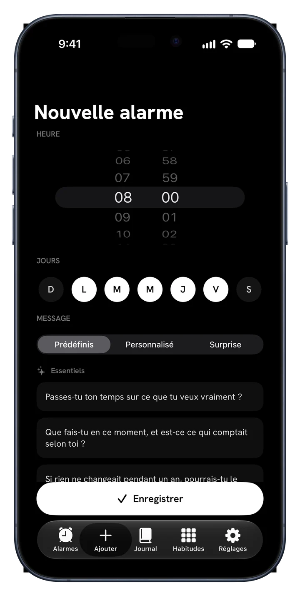
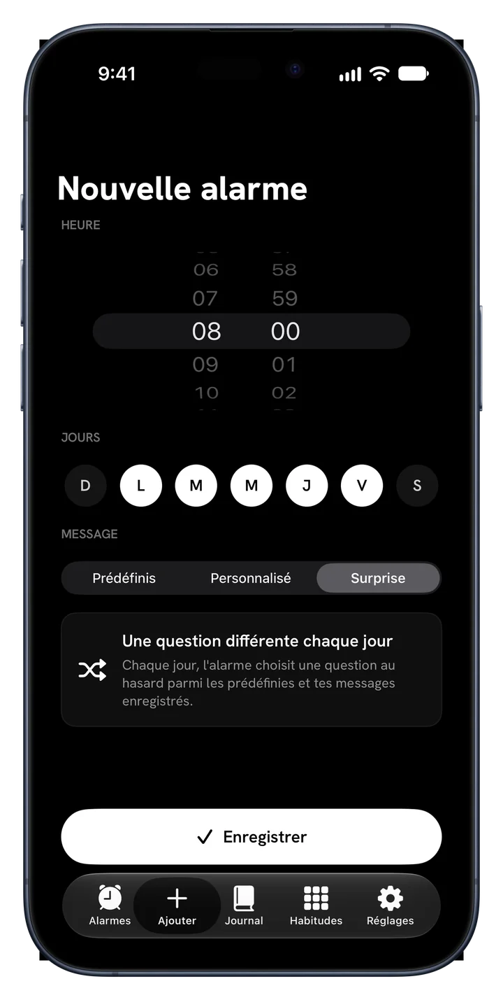
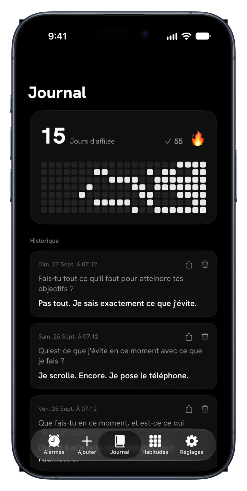
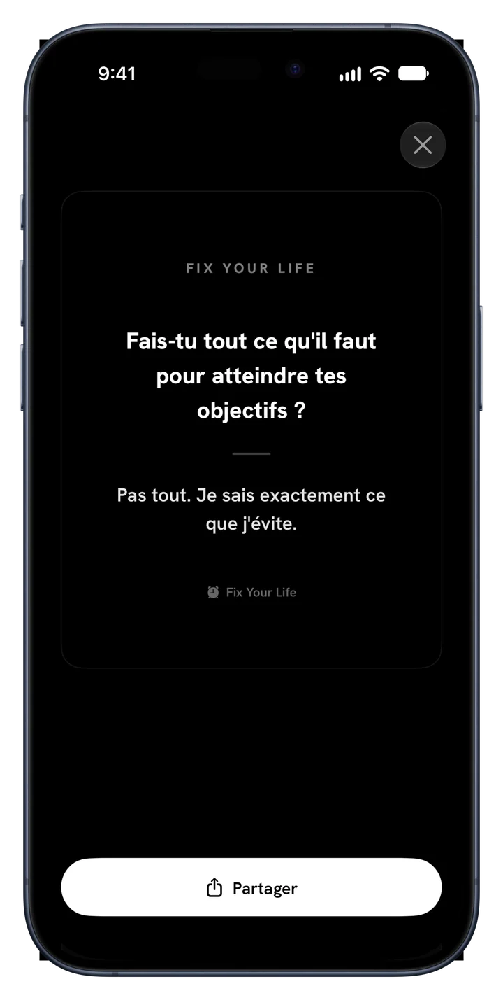

Marche du matin
Tous les joursUne demi-année, un carré par jour
Fix Your Life te réveille avec une question impossible à repousser, puis t'aide à tenir ce que tu as décidé : des habitudes avec tes propres photos, des séries et toute ton année en couleurs.
Téléchargement gratuit · Une alarme et une habitude gratuites, pour toujours · Sans pub. Jamais.



Nouveau · Habitudes
Ajoute ce que tu veux vraiment tenir. Donne un visage à chaque chose, coche-la et regarde la série grandir dans sa propre couleur.


Une demi-année, un carré par jour
Une demi-année, un carré par jour
Une demi-année, un carré par jour
L'app en détail
Chaque écran sert une seule chose : te réveiller à ta propre vie.
Des alarmes qui ont du sens
Règle des alarmes à n'importe quelle heure, n'importe quel jour. Chacune porte une question au lieu d'un bruit qu'on coupe et qu'on oublie. Réponds en une ligne, et la journée commence en toute honnêteté.

34 questions · 6 packs
Essentiels, Ambition, Temps et mortalité, Identité, Miroir honnête et Être vivant. Ce ne sont pas des affirmations. Ce sont les questions que tu évitais. Ou écris les tiennes.

Mode Surprise
La répétition devient un bruit de fond. Le mode Surprise choisit une nouvelle question pour chaque jour de la semaine, et l'alarme garde tout son tranchant.

Un journal qui pose la question d'abord
Chaque réponse est enregistrée avec sa question et sa date. La série, la carte de chaleur et l'historique sont là, et la régularité devient quelque chose qu'on voit.

Widgets
Ta série et la question du jour, pour que la première chose que tu voies soit ce que tu évitais.

Partage tes victoires
Transforme n'importe quelle réponse en une carte épurée et partage-la où tu veux. Tes réponses prouvent que tu étais là, et certaines méritent la lumière.
Comment ça marche
Ton plan est prêt avant la fin de la première minute.
Matins, discipline, santé, concentration, temps d'écran ou sommeil. Ton plan se construit autour.
Choisis l'heure. Elle sonne chaque jour avec une question liée à ton choix.
Petite, quotidienne et à toi. Ajoute une photo, choisis une couleur, coche-la.
Chaque jour tenu allume un carré. Tu en rates un, ça se voit. Continue, et l'année se remplit de couleur.
Tarifs
Une alarme et une habitude sont gratuites pour toujours, avec toutes les fonctions. Premium sert à tenir une journée entière.
$0 pour toujours
Sans carte, sans essai
$17.99 / an
3 jours gratuits · environ $0.35 par semaine
$39.99 une fois
Un seul paiement, sans abonnement
Aussi disponible à la semaine pour $4.99. Prix en dollars américains ; l'App Store affiche le prix de ton pays. L'essai gratuit s'adresse aux nouveaux abonnés du plan annuel.
FAQ
« Si quelqu'un filmait les deux dernières heures de ta vie, en conclurait-il que tu veux ce que tu dis vouloir ? »
Une question le matin. Un carré par jour. C'est comme ça qu'une année change de couleur.
Télécharger dans l'App StoreTéléchargement gratuit · 45 langues · Sans pub. Jamais.